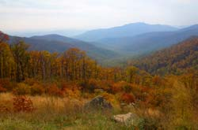

A woodlot, whether three acres or 100 acres, can provide amyriad of things: fun and recreation; a bootstrap business forfirewood and lumber; and the sheer satisfaction of having treesnearby. But to get the most out of your woodlot requires someforest management.
To get started, develop aforest plan, which will enable you to get the most out of theforest for the longest period of time. First, decide what you wantfrom your woods ? firewood, lumber, a place to hunt for mushrooms,to create hiking trails? Next, do an inventory of thekinds oftrees and their sizes. This is crucial to a good and accurateforest plan. A field guide to trees is a good investment. In theEast, a woodlot can double in volume every 10 to 20 years. Knowingwhich trees to cut for firewood and which ones to harvest forlumber can make a big difference in maximizing income from yourwoodlot. For instance, if you cut down a mature black walnut orWestern red cedar tree for firewood, you could be cheating yourselfout of thousands of dollars worth of lumber.
If you are unable to identify all of the trees in your woods,contact your local countyextensionoffice or state-runStewardshipIncentive Program. The experts from these offices can assistyou in identifying your trees and in determining the next stage ofthe forest plan ? deciding what percentage of your forest you wantto harvest, how much income you can gain and what percentage willbe left to mature for future use.
Many people just want to enjoy their woodlots and use dead woodfor heat. If that's what you have in mind, it still makes sense todo a forestry plan. You may discover that your woods are populatedwith the same kind of tree of about the same age. This means thereis not much flora or fauna diversity in your forest. By cuttingmost of the trees in an area of the woods, you can open up theforest floor for bushes and new saplings that are not present in amore mature forest. This also encourages wildlife diversity. Deer,for example, prefer to browse on grasses, herbs and the tender newshoots of bushes and trees, which are not as plentiful in a matureforest as in a newly developing one.
It is prudent when thinning a woodlot of dead trees to leavethree or four standing per acre. These will serve as a food sourceand nesting place for wildlife, such as woodpeckers. In addition,fallen trees, leaves and needles are the materials from which soilis made. So, do not make the mistake of thinking that a healthyforest needs to be raked and cleared of alldown and dead material. Decomposing trees also are home toinsects, worms and other small forest creatures, which in turn arefood for birds and animals higher on the food chain.
One, if not the main, goal of your woodlot management planshould be plant and animal diversity, which will lead to thehealthiest possible forest.
For more on managing a woodlot, consider thise-handbook. Share your forest management tips by posting acomment below.
|
 A woodlot, carefully managed, will provide generations of owners with fuel, lumber and enjoyment. |
|
|